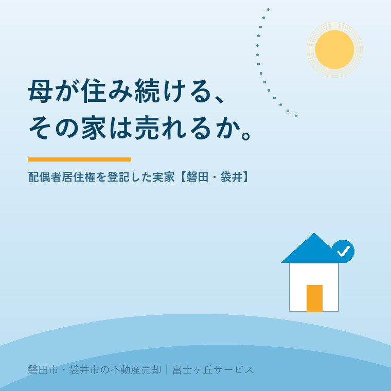

2026年8月16日｜カテゴリ：相続・名義／税金と制度

この記事の要点
Q. 父が亡くなり、実家の名義は長男の私、母には配偶者居住権を付けることになりました。母がいる間は当然売りません。でも、母が施設に入ることになったら、この家は売れるんでしょうか。
A. そのままでは売れません。ただし、消滅させれば売れます。問題は、消滅させ方によって税金がまったく違うことです。配偶者居住権は令和2年4月1日に施行された制度で、民法1032条2項により第三者へ譲り渡すことができません。民法1031条の登記をしてあれば、建物が売られても買主に対して住み続ける権利を主張できますから、その状態の家を買う人はまずいません。売るには、配偶者の放棄または所有者との合意解除で権利を消滅させ、登記を抹消してからになります。ここが分かれ道です。所有者が対価を払わずに消滅させると、相続税法基本通達9-13の2により、所有者側に「みなし贈与」として贈与税がかかり得ます。逆に対価を払うと、今度は配偶者側に譲渡所得税がかかり、しかもこれは総合課税の譲渡所得なので、居住用財産の3,000万円特別控除は使えません。確認の順番は、①母がいつまで住むのか ②売る時期の見込み ③そのとき誰の税金になるのかの3つです。磐田市・袋井市では、介護施設の運営から不動産事業を始めた富士ヶ丘サービスのような「介護×不動産」専門の会社に相談するという選択肢があります。
お父様が亡くなられて、遺産分割の話をしている。実家の名義は子が引き継ぐ。でも、お母様はこの家に住み続けたい。
このとき、司法書士や税理士から「配偶者居住権という方法があります」と提案されることがあります。とても良い制度です。実際、私たちも「使えるなら使ってください」とお伝えします。
ただし、ご相談の場でいつも申し上げているのは、「10年後、その家を売るときの話も一緒に聞いておいてください」ということです。設定するときの説明と、外すときの説明は、たいてい別の場面で行われます。そして外すときのほうが、はるかに難しい。
今日は、その「外すとき」の話を先にしておきます。制度と税務は、2026年8月16日時点で法務省・国税庁が公表している内容に沿って書きます。
法務省の説明によれば、この制度は令和2年4月1日に施行されました。民法（相続法）改正のうち、残された配偶者の居住を守るための方策です。
仕組みは、家の価値を「住む権利」と「所有権」に分けることです。
| 誰が持つか | できること | |
|---|---|---|
| 配偶者居住権 | 残された配偶者（お母様） | 亡くなるまで、家賃を払わずに住み続けられる |
| 居住建物の所有権 | 子など（負担付きの所有権） | 名義は持つが、配偶者がいる間は使えない |
なぜこれが必要だったか。実家しか財産がない家庭で、配偶者が家を丸ごと相続すると、預貯金が取れなくなるからです。家は手に入っても生活費がない。逆に子が家を相続すると、母の住む場所がなくなる。この板挟みを解くのが配偶者居住権です。
成立させる方法は、法務省の説明によれば主に次の3つです。
存続期間は、原則として配偶者が亡くなるまで（終身）です。遺産分割や遺言で「10年間」などと期間を定めることもできます。
よく混同されるので分けておきます。配偶者短期居住権は、相続開始時に無償で住んでいた建物に、最低6か月間は住み続けられるという別の制度です。法務省は「配偶者短期居住権は登記することはできません」と説明しています。登記できない以上、建物が第三者に売られたときに権利を主張できません。
今日の話は、登記できるほう──長期の配偶者居住権です。
ここが不動産の話です。
民法1031条は、居住建物の所有者に対して、配偶者居住権を取得した配偶者に登記を備えさせる義務を負わせています。そして配偶者は、登記をしなければ第三者に対抗できません。
登記で押さえておくべき点を3つ挙げます。
① 登記されるのは「建物」だけです。土地には配偶者居住権の登記はされません
② 登記があれば、建物が第三者に売られても、買主に対して住み続ける権利を主張できます
③ 登記がなければ、買主に「出てください」と言われたときに抵抗できません
①は実務でとても大事です。土地の登記簿を見ても配偶者居住権は出てきません。建物の登記簿を取らないと分からない。ご実家の権利関係を確認するときは、土地と建物の両方の登記事項証明書を取ってください。
なお、相続税の計算上は「敷地利用権」という考え方で土地の価値も配偶者側に按分されますが、これは税務上の評価であって、登記される権利ではありません。ここを混同すると、話が噛み合わなくなります。
本題です。答えは「3通りある」です。
| やり方 | 売れるか | 現実性 |
|---|---|---|
| 配偶者居住権を付けたまま、所有権だけ売る | 法律上は可能 | ほぼ買い手がつかない。買っても住めず、貸せず、いつ空くか分からない |
| 配偶者居住権だけを売る | できない | 民法1032条2項により譲渡が禁じられている |
| 配偶者居住権を消滅させ、抹消登記をしてから売る | 売れる | 実務ではこれ一択。ただし税金の問題が出る |
法務省も「配偶者居住権は配偶者の居住を目的とする権利ですので、第三者に配偶者居住権を譲り渡すことはできません」と明記しています。売れないのではなく、譲渡が禁止されている。これは制度の目的からくる、動かせない性質です。
したがって、施設に入ることになったお母様の実家を売るには、先に配偶者居住権を消して、登記簿をきれいにする必要があります。消滅させる方法は、主に配偶者による放棄と、配偶者と建物所有者との合意解除です。
ここが今日いちばんお伝えしたいところです。「母がもう住まないから権利を外す」という、家族の中では当たり前の話に、税金が絡みます。
| 消滅のしかた | 誰に課税されるか | 内容 |
|---|---|---|
| 配偶者が亡くなって消滅 | 課税なし | 配偶者居住権は死亡により消滅し、相続税の課税対象にならない |
| 存命中に、無償で放棄・合意解除 | 建物所有者（子）に贈与税 | 相続税法基本通達9-13の2により、消滅直前の配偶者居住権等の価額相当の利益を配偶者から贈与により取得したものとして取り扱う |
| 存命中に、対価を払って消滅 | 配偶者に譲渡所得税 | 所得税基本通達33-6の8により、対価は譲渡所得に係る収入金額に該当する。総合課税の譲渡所得 |
配偶者が亡くなったときに配偶者居住権が消滅した場合、相続税はかかりません。これが制度上の大きな利点です。
一次相続でお母様が配偶者居住権を取得し、二次相続でそれが消える。そのとき、子が持っていた「負担付きの所有権」は、負担が外れて完全な所有権に戻りますが、この分に相続税は課されません。結果として、家の価値のうち配偶者居住権に相当する部分が、二次相続の課税対象から抜けることになります。
だから、税務の観点だけを見れば「お母様が最後までお住まいになる」のがいちばん有利です。問題は、人生がそのとおりに進むとは限らないことです。
お母様が施設に入られ、「もう住まないから」と権利を放棄した。所有者である子は何も払わなかった。このとき、贈与税の対象になり得ます。
相続税法基本通達9-13の2は、配偶者と建物所有者の合意もしくは配偶者による放棄、または民法1032条4項の規定により配偶者居住権が消滅した場合において、建物等の所有者が対価を支払わなかったとき、または著しく低い価額の対価を支払ったときは、原則として、その所有者が、消滅直前に配偶者が有していた配偶者居住権の価額に相当する利益および土地を使用する権利の価額に相当する利益を、配偶者から贈与によって取得したものとして取り扱うとしています。
家族の中では「もう住まないんだから当たり前」でも、税務は財産の移転として見ます。
では対価を払えばいいのか。そうすると今度は、お母様の側に譲渡所得が立ちます。
所得税基本通達33-6の8は、配偶者居住権、および敷地を配偶者居住権に基づき使用する権利の消滅につき対価の支払を受ける場合、その対価の額は譲渡所得に係る収入金額に該当するとしています。
ここが要注意です。この譲渡所得は「総合課税」です。土地建物の譲渡のような分離課税ではありません。何が違うか。
最後の一行が、介護の現場ではいちばん重い。施設に入られた年に大きな所得が立つと、翌年度の負担が上がります。3,000万円控除の期間の落とし穴の記事にも書きましたが、特例は「あるはず」と思っている人ほど、使えないことに気づくのが遅れます。
なお、令和2年度税制改正により、対価を得て消滅させた場合の取得費の計算方法が定められています。被相続人の居住建物等の取得費に配偶者居住権に対応する割合を乗じ、そこから設定日から消滅日までの期間に係る減価の額を控除する、という考え方です。計算は複雑ですので、必ず税理士にご確認ください。
この地域の実家には、共通する事情があります。
まず、建物が古いこと。昭和50年代までの木造で、相続税評価上の建物価格はすでに小さい。配偶者居住権の評価は建物と敷地利用権の両方から出ますが、家の値段が小さければ、権利の値段も小さくなります。「節税のために設定する」という動機は、この地域ではそれほど大きくならないことがあります。
次に、敷地が広いこと。150坪、200坪という実家が普通にあります。この場合、価値の大半は土地です。敷地利用権の評価が効いてきますので、土地の評価額を先に押さえておく必要があります。
そして三つめ。お母様が本当に住み続けられるかどうか。広い敷地の草刈り、雨戸の開け閉め、車がなければ買い物にも行けない。「住み続ける」と決めた時点では元気でも、5年後にどうなるかは分かりません。
私たちが介護の現場で見てきた実感を書きます。配偶者居住権を設定してから2〜3年で施設入居になるケースは、決して珍しくありません。そのとき、上に書いた税金の問題が一気に来ます。
そもそも、お母様が判断能力を保っていることが前提です。放棄も合意解除も、意思表示が必要です。認知症が進んでからでは、成年後見の手続きが必要になり、後見人は本人の不利益になる放棄には応じられません。この構造は認知症で実家が凍結する記事に書いたものと同じです。
そして、名義を子の共有にした場合はきょうだい共有名義の記事の問題も重なります。配偶者居住権の合意解除には、建物所有者全員の合意が要ります。きょうだい3人の共有なら、3人ともです。
なお、生前に家を渡してしまう方法との比較を考えている方は、実家の生前贈与の記事もあわせてご覧ください。どの制度が有利かは、家の評価額と家族の構成で変わります。
当社は、磐田市見付で介護施設を運営するところから不動産の仕事を始めました。だから、「お母様がいつまでこの家に住めそうか」という話を、不動産の話と同じ席でできます。
配偶者居住権は、法律の制度としては相続の話です。税務の制度としては相続税の話です。けれども実際に効いてくるのは、介護の話です。いつ施設に入るか、そのとき誰が手続きをするか、費用はどこから出すか。ここが読めていないと、良い制度が重荷に変わります。
私たちは司法書士でも税理士でもありません。設定するかどうかを判断するのは、専門家とご家族です。ただ、「この家は将来いくらで、誰が買うのか」という部分は、地元の不動産会社にしか出せません。その数字がないまま制度だけ決めると、後で外すときに困ります。
私たちが目指しているのは「高く売る」だけではなく、「家族が困らない売却」です。価格の前に事実を整理する道具として、ふじがおか実家カルテを用意しています。
配偶者居住権は、良い制度です。使えるご家庭では、使ったほうがいい。私たちもそう思っています。
ただ、設定は入口で、出口は10年後です。入口を作る人と、出口を通る人は、たいてい別の人になります。だからこそ、入口の日に出口の話をしておいてください。それだけで、10年後のご家族が助かります。
ふじがおか実家カルテ｜配偶者居住権のある実家の出口もご相談ください
設定する前に、売るときの数字を。
住所をもとに、建物と土地のおおよその評価、将来売るときの想定、名義と登記の状況、次に確認すべきことを整理して1枚にしてお出しします。作成料0円・入力約1分。申込みだけで売却依頼にはなりません。
本記事は2026年8月16日時点で法務省・国税庁が公表している情報に基づく一般的な解説であり、個別の相続における配偶者居住権の設定の可否、評価額、税額を示すものではありません。配偶者居住権の評価は建物の構造・築年数・配偶者の年齢・法定利率等により大きく変わり、消滅時の課税関係も対価の有無や金額によって異なります。設定・放棄・合意解除の手続きおよび登記は司法書士へ、相続税・贈与税・譲渡所得税の具体的な計算と申告は税理士へ、遺産分割の協議や家庭裁判所の手続きは弁護士へ、必ず個別にご確認ください。成年後見が必要な場合の取扱いも本記事の範囲外です。個別のご相談は当社までどうぞ。
磐田市・袋井市の実家じまい・相続空き家相談
固定資産税通知書だけでも相談できます
住所があいまいでも、通知書や写真から名義・道路・農地・残置物の確認順を整理します。カルテ申込またはLINEで状況を送ってください。
富士ヶ丘サービス株式会社／静岡県磐田市見付5789番地1／TEL:0538-31-3308／静岡県知事 (2) 第14083号／代表取締役・宅地建物取引士 大石 浩之